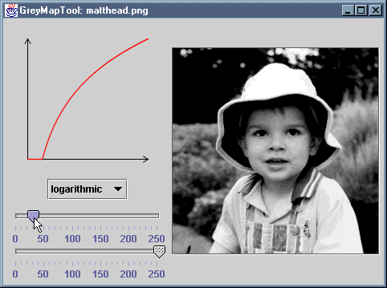

The GreyMapTool application displays an image and a mapping
function that is being applied to pixel grey levels. Different shapes of
mapping function can be selected, and the limits of the mapping can be
varied using sliders. As each change is made, the image updates to reflect
that change.
The application consists of source files GreyMapTool.java,
GreyMapPanel.java and GreyMapView.java.
The corresponding .class files are provided 'as is' and
are also packaged in the JAR file GreyMapTool.jar.
You can install the application by copying GreyMapTool.jar,
along with either the MS-DOS batch file GreyMapTool.bat or the
bash shell script GreyMapTool.sh, as appropriate. The
batch file or script should be edited to reflect the new location of the JAR
file.